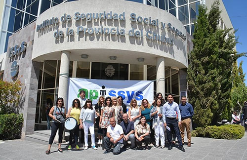

Real Chubut - Agencia de Noticias


Seros: tensión entre el gremio y el Directorio

Hoy de nuevo no habrá atención al público en la obra social en toda la provincia entre las 11.30 y las 13.30. Ayer hubo asambleas y protestas. El Gobierno atribuyó los reclamos a que “se tocaron intereses personales” y aclaró las contrataciones polémicas. Fuerte respaldo del gobernador Arcioni.
Ayer comenzó y hoy se repetirá un plan de lucha de los empleados del Instituto de Seguridad Social y Seguros, que harán asambleas y no atenderán al público entre las 11.30 y las 13.30 en ninguna delegación de Chubut ni en la sede de Capital Federal. Denuncian irregularidades en el manejo del ISSyS, como la creación de un área nueva con la designación de un contador que percibe $80 mil de sueldo.
La secretaria adjunta del gremio APISSS, Carla Peralta Martínez, dijo que “las asambleas se realizan en todas las dependencias y en Lago Pueblo además los jubilados concretaron un abrazo simbólico a la institución”.
Reclamó por una presunta persecución a los empleados que participan. “Hubo una reunión informal con los jefes de departamentos y se pidió un listado del personal. Hablamos con algunos y les planteamos que desde el momento que hagan una nota y nos formalicen el pedido, implica una persecución laboral y se hará la denuncia”.
Los reclamos incluyen la categorización de personal sin concurso. “El Directorio no quiso atender al gremio y convocó a una reunión en la Secretaría de Trabajo. No plantearon en ningún momento reunirse con nosotros”, explicó.
En tanto, el directorio del ISSyS sentó postura con un comunicado de prensa. “Las recientes resoluciones de ninguna manera incorporan a ningún nuevo personal a la planta de personal, ni transitoria, ni definitiva, ni contratada, sino que se ordena la estructura del organismo determinando misiones y funciones y asignando niveles de responsabilidad y en segundo lugar se asigna en el nuevo esquema definido al personal que ya venía trabajando en calidad de a cargo, es decir transitoriamente y de modo tal de permitir en un futuro los correspondientes concursos”.
En cuanto al funcionamiento de las Secretarías de Presidencia y de Directorio, lo resuelto “es el cierre de un conflicto que empezó hace más de un año y medio, donde los entonces representantes de los empleados del Instituto solicitaron el análisis de la situación y la importancia de organizar la estructura”.
Luego del análisis y propuesta de un especialista en recursos humanos, el Directorio “redefinió misiones, funciones y mayores responsabilidades, para luego asignar a cargo transitoriamente y hasta su posterior concurso a las mismas personas que se desempeñan en el área desde hace 10 años”.
Según la aclaración, la conducción del Instituto con cuatro miembros del Directorio y colaboración directa de las Secretarías “se lleva adelante asumiendo en la práctica una mayor carga de tareas y responsabilidades específicas, toda vez que desde diciembre 2015 no se cubrió el cargo de Gerente General, lo cual representa en el más estricto sentido de la austeridad que algunos hoy pretenden poner en duda un ahorro de más de 1,5 millones de pesos anuales”.
En cuanto a la nueva área, “se reflotó el Departamento de Estadística Médica, con una función importantísima para la obra social”. Allí “se asignó a cargo transitoriamente y hasta su posterior concurso a los profesionales que ya se encontraban trabajando en la materia, sin que bajo ningún punto de vista se hayan determinado remuneraciones caprichosas al azar, sino que se les asignó la retribución que corresponde a esa categoría”.
“En una primera muestra de lo atinado de la decisión y en línea con el cuidado de los recursos, en poco tiempo ya se han producido mejoras en el funcionamiento del control previo, detectando y corrigiendo el funcionamiento del sistema de validación on line, analizando y determinando prácticas trazadoras de gastos por especialidad médica, motivando la justificación o el débito correspondiente, todo lo cual repercutirá reduciendo el gasto anual de la obra social en una cifra varias veces millonaria”.
Frente al conflicto actual, que afecta el funcionamiento de la institución, “solo nos resta indicar que todo el trabajo del Directorio y las Direcciones responsables se enmarcan en lo que determina la ley”.
El comunicado insiste con que “las actitudes que se generan por los medios públicos y las redes sociales, nos llevan a pensar que mejorar los procesos administrativos y de control o auditoría, puede estar tocando intereses personales e individuales que no estamos dispuestos a aceptar”.
“Son momentos en que la falta de respeto hacia las instituciones, hacia las personas y fundamentalmente hacia la ley, deben encontrar su límite. Estamos convencidos que nos encontramos en el camino correcto, trabajando con total austeridad y responsabilidad cuidando los intereses de los únicos dueños del ISSyS: los afiliados”.
El gobernador Mariano Arcioni respaldó al presidente del ISSyS, Cristian Eguillor, y el directorio. “Su trabajo de reordenamiento desde hace casi dos años es el camino que les marcó Das Neves y ahora yo”.
“No hubo designaciones por acomodo ni nada por el estilo. Hubo un reordenamiento de la tarea para poder luego normalizar la situación con los concursos”, expresó. “Las tareas para lograr mayor eficiencia son las que van a mejorar, en un año, la situación del ISSyS y en ese marco se produjeron las resoluciones, manipuladas con mala intención especialmente en las redes sociales”.
Fuente. Diario Jornada
PUBLICIDAD